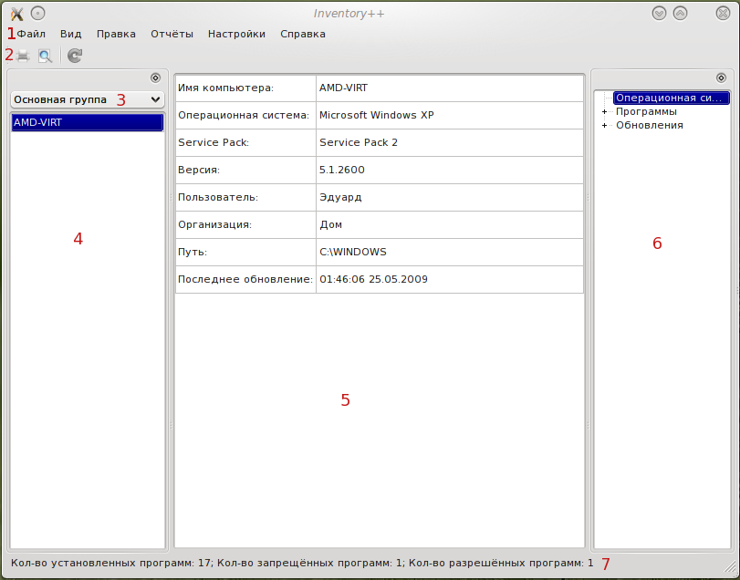
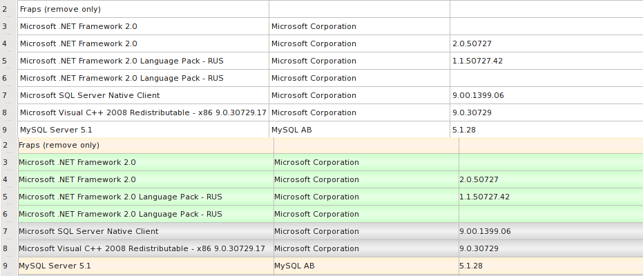

Элементы главного окна
Главное окно программы состоит из нескольких основных элементов.
Они показаны на рисунке 1.

Рисунок 1 - основные элементы главного окна
Элементы:
- Главное меню
- Панель инструментов
- Выпадающий список "Группы ПК"
- Список компьютеров в выбранной группе
- Главная информационная часть - здесь отображается вся информацию о ПК
- Древовидное меню для выбора просматриваемого параметра
- Статус бар - здесь отображается информация по установленным на ПК программам и справка по некоторым элементам
Меню 'Файл'
Меню 'Файл' содержит следующие пункты:
- Выход - закрытие окна и выход из программы
Меню 'Вид'
Меню 'Вид' содержит следующие пункты:
- Цветовая схема - включает\отключает цветовую схему главной таблицы (пример на рис. 2)
- Показать скрытые - включает\отключает отображение "скрытых" программ

Рисунок 2 - сверху цветовая схема отключена, сверху включена
Меню 'Правка'
Меню 'Правка' содержит следующие пункты:
- Выход - закрытие окна и выход из программы
Меню 'Отчёты'
Меню 'Отчёты' содержит следующие пункты:
- Быстрый отчёт - позволяет сгенерировать отчёт по выбранному компьютеру
- Просмотрщик отчётов - открывает окно просмотрщика отчётов, предназначенного для просмотра сохранённых на компьютере отчётов
Меню 'Настройки'
Меню 'Настройки' содержит следующие пункты:
- Пользователи - открывает окно для смены пароля пользователям
Меню 'Справка'
Меню 'Справка' содержит следующие пункты:
- Содержание - открывает данную справку
- О программа - открывает окно 'О программе'